From cell averages to the next timestep.
Read the central pieces of Tom Abel’s Eulerian MHD code. Choose an annotation below a code block, or click a highlighted line, for matching equations and an explanation beside it. The glossary stays on the right as you read.
Verbatim excerpts from Abel et al., GLMMHDTurb ↗ · benchmark snapshot 15ce37d47782. Source order is rearranged for teaching; gaps are marked. Annotations are ours.
Follow one timestep
Which version am I reading?
The core physics helpers are shared. The main update excerpt follows the original tiled LLF path; the other sections show the alternative solvers and production storage.
| Benchmark label | Entry point | Reconstruction | Flux | Shared storage | Cleaning speed |
|---|---|---|---|---|---|
| GLM tiled LLF | step_tiled! | MonCen PLM | LLF | Float32 | Δt dependent |
| GLM f16/HLL | step_plm! | MonCen PLM | HLL | Float16 | Δt dependent |
| GLM HLLD | step_plm! | MonCen PLM | HLLD | Float32 | Δt dependent |
| GLM PPM | step_plm! | Compact PPM | HLL | Float16 | Δt dependent |
| GLM constant ch | step_plm! | MonCen PLM | HLL | Float16 | Held constant by driver |
All five use a fixed grid and Hancock prediction. Float16 here describes shared storage; global conserved states remain Float32. Configuration names describe the runs, not a claim of equal accuracy.
Start with the two representations of the same gas and field. The conserved state is evolved; primitives make reconstruction and wave estimates convenient.
# Conserved order : (rho, rho*vx, rho*vy, rho*vz, E, Bx, By, Bz, psi)# Primitive order : (rho, vx, vy, vz, p, Bx, By, Bz, psi)@fastmath @inline function cons2prim(c::NTuple{9}, gamma::Float32, smallr::Float32, pfl::Float32) rho = max(c[1], smallr) ir = 1.0f0 / rho vx = c[2]*ir; vy = c[3]*ir; vz = c[4]*ir bx = c[6]; by = c[7]; bz = c[8] ekin = 0.5f0*(c[2]*c[2] + c[3]*c[3] + c[4]*c[4])*ir emag = 0.5f0*(bx*bx + by*by + bz*bz) p = max((gamma - 1.0f0)*(c[5] - ekin - emag), pfl) return (rho, vx, vy, vz, p, bx, by, bz, c[9])end @inline function prim2cons(q::NTuple{9}, gamma::Float32) rho = q[1]; vx = q[2]; vy = q[3]; vz = q[4]; p = q[5] bx = q[6]; by = q[7]; bz = q[8] ekin = 0.5f0*rho*(vx*vx + vy*vy + vz*vz) emag = 0.5f0*(bx*bx + by*by + bz*bz) E = p/(gamma - 1.0f0) + ekin + emag return (rho, rho*vx, rho*vy, rho*vz, E, bx, by, bz, q[9])endRead the nine slots
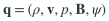
Bold v and B each stand for three components, giving nine slots in each tuple.
LaTeX source
\[ \mathbf{U}=(\rho,\rho\mathbf{v},E,\mathbf{B},\psi) \]
\[ \mathbf{q}=(\rho,\mathbf{v},p,\mathbf{B},\psi) \]Slots 2–4 change from momentum density ρv to velocity v; slot 5 changes from total energy density E to gas pressure p. B and ψ keep their slots. Magnetic units absorb μ₀, giving |B|²/2 for magnetic energy density.
Recover pressure from energy
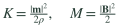
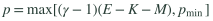
m = (c[2], c[3], c[4]); smallr = ρmin; pfl = pmin. K and M correspond to ekin and emag.
LaTeX source
\[ \rho=\max(U_1,\rho_{\min}),\quad\mathbf{v}=\mathbf{m}/\rho \]
\[ K=\frac{|\mathbf{m}|^2}{2\rho},\quad M=\frac{|\mathbf{B}|^2}{2} \]
\[ p=\max\!\left[(\gamma-1)(E-K-M),p_{\min}\right] \]Subtract kinetic and magnetic energy from E to recover internal energy, then multiply by γ−1. max(..., pfl) imposes a pressure floor on this primitive state. It does not by itself rewrite the stored conserved energy.
Convert back
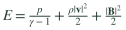
Magnetic units absorb μ₀. This definition of E has no additional ψ-energy term.
LaTeX source
\[ E=\frac{p}{\gamma-1}+\frac{\rho|\mathbf{v}|^2}{2}+\frac{|\mathbf{B}|^2}{2} \]
\[ \mathbf{m}=\rho\mathbf{v} \]Build total energy from gas pressure, kinetic energy, and magnetic energy. Multiply velocities by density to obtain momentum densities. All these quantities are per volume, rather than totals for the whole cell.
This is the ideal-MHD flux through an x face for one state. Later, the Riemann solver combines the left and right states into one numerical face flux.
@inline function phys_flux_x(q::NTuple{9}, gamma::Float32) rho = q[1]; vx = q[2]; vy = q[3]; vz = q[4]; p = q[5] bx = q[6]; by = q[7]; bz = q[8] b2 = bx*bx + by*by + bz*bz ptot = p + 0.5f0*b2 ekin = 0.5f0*rho*(vx*vx + vy*vy + vz*vz) E = p/(gamma - 1.0f0) + ekin + 0.5f0*b2 vdotb = vx*bx + vy*by + vz*bz return (rho*vx, rho*vx*vx + ptot - bx*bx, rho*vx*vy - bx*by, rho*vx*vz - bx*bz, (E + ptot)*vx - bx*vdotb, zero(rho), # F[Bx] -> set by glm_pair vx*by - vy*bx, vx*bz - vz*bx, zero(rho)) # F[psi] -> set by glm_pairendPressure includes the magnetic field
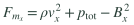
ptot = total pressure; vdotb = v·B. The negative magnetic products are the tension terms.
LaTeX source
\[ p_{\rm tot}=p+\frac{|\mathbf{B}|^2}{2} \]
\[ F_{m_x}=\rho v_x^2+p_{\rm tot}-B_x^2 \]
\[ F_{m_y}=\rho v_xv_y-B_xB_y \]
\[ F_E=(E+p_{\rm tot})v_x-B_x(\mathbf{v}\cdot\mathbf{B}) \]ptot is p + |B|²/2. The −Bx² and −BxBy terms in the momentum flux encode directional magnetic stresses. The energy flux also includes magnetic work through −Bx(v·B).
Nine flux components
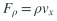
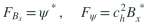
⊥ means the y and z components at an x face. The last two fluxes are supplied by glm_pair, replacing the placeholders.
LaTeX source
\[ F_\rho=\rho v_x \]
\[ \mathbf{F}_{\mathbf{B}_\perp}=v_x\mathbf{B}_\perp-B_x\mathbf{v}_\perp \]
\[ F_{B_x}=\psi^*,\quad F_\psi=c_h^2 B_x^* \]The tuple follows the conserved-state order. Its first entry is mass flux ρvx. The Bx and ψ entries are placeholders: the GLM pair fills them separately, while the transverse magnetic fluxes come from the induction equation.
PLM estimates a line inside each cell. MonCen limits that line so sharp jumps do not produce large new overshoots.
@fastmath @inline function moncen(dl, dr) dc = 0.5f0*(dl + dr) sgn = ifelse(dc >= 0.0f0, 1.0f0, -1.0f0) val = sgn * min(2.0f0*min(abs(dl), abs(dr)), abs(dc)) return ifelse(dl*dr <= 0.0f0, 0.0f0, val)end # Half-slope of a primitive state vector from (L, M, R) neighbours.@fastmath @inline function prim_slope(L::NTuple{9}, M::NTuple{9}, R::NTuple{9}) return ntuple(i -> 0.5f0*moncen(M[i]-L[i], R[i]-M[i]), 9)end@inline padd(q::NTuple{9}, s::NTuple{9}, a::Float32) = ntuple(i -> q[i] + a*s[i], 9)Compare the two neighboring differences
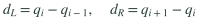
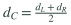
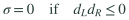
dl, dr, dc map to dL, dR, dC. The zero-slope rule overrides the preceding expression at an extremum.
LaTeX source
\[ d_L=q_i-q_{i-1},\quad d_R=q_{i+1}-q_i \]
\[ d_C=\frac{d_L+d_R}{2} \]
\[ \sigma={\rm sgn}(d_C)\min(2|d_L|,2|d_R|,|d_C|) \]
\[ \sigma=0\quad\mathrm{if}\quad d_Ld_R\leq0 \]dl = M−L and dr = R−M. If their signs disagree, the cell is at an extremum and the limiter returns zero. Otherwise it caps the centered slope using twice the smaller one-sided difference.
These are half-slopes
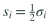
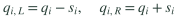
prim_slope returns s, the half-slope. padd(q, s, ±1) builds the two spatial edges, component by component.
LaTeX source
\[ s_i=\frac{1}{2}\sigma_i \]
\[ q_{i,L}=q_i-s_i,\quad q_{i,R}=q_i+s_i \]prim_slope applies MonCen to all nine primitive quantities, then multiplies by 1/2. That is why padd(q, s, +1) reaches one face and padd(q, s, −1) reaches the other; s already includes the half-cell distance.
The Hancock predictor advances the reconstructed cell state to the middle of the timestep, before neighboring states meet at a face.
@fastmath @inline function hancock(m0::NTuple{9}, sx, sy, sz, dtdx::Float32, gamma::Float32) u0 = prim2cons(m0, gamma) h = 0.5f0*dtdx fxp = dir_flux(padd(m0, sx, 1.0f0), 1, gamma); fxm = dir_flux(padd(m0, sx, -1.0f0), 1, gamma) fyp = dir_flux(padd(m0, sy, 1.0f0), 2, gamma); fym = dir_flux(padd(m0, sy, -1.0f0), 2, gamma) fzp = dir_flux(padd(m0, sz, 1.0f0), 3, gamma); fzm = dir_flux(padd(m0, sz, -1.0f0), 3, gamma) return ntuple(i -> u0[i] - h*((fxp[i]-fxm[i]) + (fyp[i]-fym[i]) + (fzp[i]-fzm[i])), 9)endThe half-step
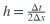
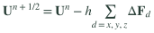
h is the code variable h. fxp−fxm, fyp−fym, and fzp−fzm are the three directional differences.
LaTeX source
\[ h=\frac{\Delta t}{2\Delta x} \]
\[ \Delta\mathbf{F}_d=\mathbf{F}_d(\mathbf{q}+\mathbf{s}_d)-\mathbf{F}_d(\mathbf{q}-\mathbf{s}_d) \]
\[ \mathbf{U}^{n+1/2}=\mathbf{U}^n-h\sum_{d=x,y,z}\Delta\mathbf{F}_d \]dtdx means Δt/Δx. Multiplying by 0.5 gives the half-step factor. Each direction contributes a difference of physical fluxes evaluated at that cell’s reconstructed edges.
All directions contribute together
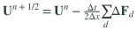
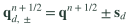
The predictor sums all directions at once. The second line shows the later face construction; floors or fallback may modify those states.
LaTeX source
\[ \mathbf{U}^{n+1/2}=\mathbf{U}^n-\frac{\Delta t}{2\Delta x}\sum_d\Delta\mathbf{F}_d \]
\[ \mathbf{q}_{d,\pm}^{n+1/2}=\mathbf{q}^{n+1/2}\pm\mathbf{s}_d \]The x, y, and z differences enter a single predicted conserved state. This is the unsplit predictor used here. These are local physical fluxes for prediction; the later corrector uses numerical Riemann fluxes shared by cells.
Before the physical MHD solve, the code reconciles the left and right normal magnetic fields using the auxiliary cleaning field ψ.
@inline function glm_pair(bnL, bnR, psiL, psiR, ch::Float32) bns = 0.5f0*(bnL + bnR) - 0.5f0*(psiR - psiL)/ch psis = 0.5f0*(psiL + psiR) - 0.5f0*ch*(bnR - bnL) return bns, psisendOne shared normal field
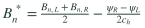
bns = Bn*; psis = ψ*. A star marks an interface solution, not a time derivative.
LaTeX source
\[ B_n^*=\frac{B_{n,L}+B_{n,R}}{2}-\frac{\psi_R-\psi_L}{2c_h} \]
\[ \psi^*=\frac{\psi_L+\psi_R}{2}-\frac{c_h}{2}(B_{n,R}-B_{n,L}) \]bns is Bn*, the interface magnetic field after solving the two-wave linear cleaning subsystem. A jump in ψ changes this field; a jump in Bn changes ψ*. Both sides of the following MHD solve receive the same Bn*.
What cleaning transports
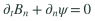
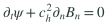
These are the linear cleaning equations before damping, with ch held constant during the face solve.
LaTeX source
\[ \partial_t B_n+\partial_n\psi=0 \]
\[ \partial_t\psi+c_h^2\partial_n B_n=0 \]
\[ \lambda_{\rm GLM}=\pm c_h \]The pair corresponds to ∂t Bn + ∂n ψ = 0 and ∂t ψ + ch² ∂n Bn = 0 before damping, with wave speeds ±ch. It controls numerical divergence errors; it does not impose exact discrete ∇·B = 0.
The fast magnetosonic speed is relative to the gas. The Riemann solver adds the fluid velocity to estimate speeds relative to the fixed grid.
@fastmath @inline function fast_speed(q::NTuple{9}, gamma::Float32, bn) rho = q[1] c2 = gamma * q[5] / rho b2 = (q[6]*q[6] + q[7]*q[7] + q[8]*q[8]) / rho d2 = 0.5f0*(b2 + c2) return sqrt(d2 + sqrt(max(d2*d2 - c2*bn*bn/rho, 0.0f0)))endSound and Alfvén contributions
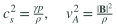
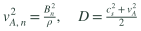
c2 = cs², b2 = vA², and d2 = D. bn is the field component normal to this face.
LaTeX source
\[ c_s^2=\frac{\gamma p}{\rho},\quad v_A^2=\frac{|\mathbf{B}|^2}{\rho} \]
\[ v_{A,n}^2=\frac{B_n^2}{\rho},\quad D=\frac{c_s^2+v_A^2}{2} \]c2 is cs² = γp/ρ; b2 is vA² = |B|²/ρ in these units. bn is the magnetic component normal to this face, so the result depends on the propagation direction.
Choose the fast root
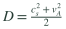
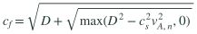
D is d2 in the source. cf is measured relative to the gas; λf,± are physical fast-wave speeds in the fixed-grid frame.
LaTeX source
\[ D=\frac{c_s^2+v_A^2}{2} \]
\[ c_f=\sqrt{D+\sqrt{\max(D^2-c_s^2v_{A,n}^2,0)}} \]
\[ \lambda_{f,\pm}=v_n\pm c_f \]The nested square roots give the fast branch of the magnetosonic relation. The max prevents a small negative discriminant from roundoff. Parallel to B, cf = max(cs, vA); perpendicular to B, cf = √(cs²+vA²).
This is the Rusanov / local Lax–Friedrichs flux used by the original benchmark path. L and R are reconstructed, predicted primitive states with a shared cleaned normal field.
@fastmath @inline function llf_x(L::NTuple{9}, R::NTuple{9}, gamma::Float32, ch::Float32, fbn, fpsi) fL = phys_flux_x(L, gamma); fR = phys_flux_x(R, gamma) uL = prim2cons(L, gamma); uR = prim2cons(R, gamma) smax = max(abs(L[2]) + fast_speed(L, gamma, L[6]), abs(R[2]) + fast_speed(R, gamma, R[6]), ch) f = ntuple(i -> 0.5f0*(fL[i] + fR[i]) - 0.5f0*smax*(uR[i] - uL[i]), 9) return (f[1], f[2], f[3], f[4], f[5], fbn, f[7], f[8], fpsi)endChoose one speed bound
a is smax. Both physical fast signals and the cleaning speed enter this implementation's LLF bound.
LaTeX source
\[ a=\max(|v_{n,L}|+c_{f,L},\ |v_{n,R}|+c_{f,R},\ c_h) \]smax bounds the absolute fluid-frame-shifted fast signals on both sides and also includes ch. A larger bound increases the coefficient of numerical diffusion in this LLF implementation.
The whole LLF formula
fL/fR are physical fluxes; uL/uR are conserved states; a = smax. A hat denotes a numerical face flux. GLM entries are overwritten next.
LaTeX source
\[ \widehat{\mathbf{F}}_{\rm LLF}=\frac{\mathbf{F}_L+\mathbf{F}_R}{2}-\frac{a}{2}(\mathbf{U}_R-\mathbf{U}_L) \]The first term averages the two physical fluxes. The second subtracts half the signal bound times the conserved-state jump. It damps unresolved jumps; uR−uL is a difference of conserved states, not primitive states.
Restore the cleaning fluxes
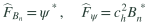
fbn = ψ* and fpsi = ch²Bn*. These replace entries 6 and 9 in the x-normal tuple.
LaTeX source
\[ \widehat{F}_{B_n}=\psi^*,\quad\widehat{F}_\psi=c_h^2 B_n^* \]The Bn and ψ flux entries are replaced with fbn = ψ* and fpsi = ch²Bn*. The physical MHD calculation and the GLM pair together supply all nine entries.
HLL approximates the physical fan with two outer waves and one state between them. This source computes the two bounds directly from the left and right fast speeds.
@fastmath @inline function hll_x(L::NTuple{9}, R::NTuple{9}, gamma::Float32, bn::Float32, fbn, fpsi) cfL = fast_speed(L, gamma, bn); cfR = fast_speed(R, gamma, bn) SL = min(min(L[2]-cfL, R[2]-cfR), 0.0f0); SR = max(max(L[2]+cfL, R[2]+cfR), 0.0f0) fL = phys_flux_x(L, gamma); fR = phys_flux_x(R, gamma) uL = prim2cons(L, gamma); uR = prim2cons(R, gamma) ihd = 1.0f0/(SR - SL) f = ntuple(i -> (SR*fL[i] - SL*fR[i] + SL*SR*(uR[i]-uL[i]))*ihd, 9) return (f[1],f[2],f[3],f[4],f[5], fbn, f[7], f[8], fpsi)endLeft and right bounds
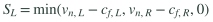
SL and SR bound the physical MHD fan after GLM has supplied a shared Bn*. These are this function's actual speed estimates.
LaTeX source
\[ S_L=\min(v_{n,L}-c_{f,L},v_{n,R}-c_{f,R},0) \]
\[ S_R=\max(v_{n,L}+c_{f,L},v_{n,R}+c_{f,R},0) \]SL takes the smallest left-going estimate; SR takes the largest right-going estimate. Clamping SL ≤ 0 and SR ≥ 0 lets one expression also give the upwind physical flux when the physical waves all travel in the same direction.
The HLL numerical flux
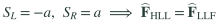
ihd = 1/(SR−SL). The LLF identity assumes the same a and the same subsequent GLM flux replacement.
LaTeX source
\[ \widehat{\mathbf{F}}_{\rm HLL}=\frac{S_R\mathbf{F}_L-S_L\mathbf{F}_R+S_LS_R(\mathbf{U}_R-\mathbf{U}_L)}{S_R-S_L} \]
\[ S_L=-a,\ S_R=a\ \Longrightarrow\ \widehat{\mathbf{F}}_{\rm HLL}=\widehat{\mathbf{F}}_{\rm LLF} \]The expression weights the left and right physical fluxes by the two wave bounds and adds a conserved-jump term. LLF is recovered for symmetric bounds SL = −a and SR = +a, with the same a and cleaning treatment.
Selected lines from hlld_x show the extra wave speeds. The full function also builds single-star and double-star states and chooses the face flux; follow the source link for that algebra.
cfL = fast_speed(L, gamma, bn) cfR = fast_speed(R, gamma, bn) SL = min(min(uL, uR) - max(cfL, cfR), 0.0f0) SR = max(max(uL, uR) + max(cfL, cfR), 0.0f0) # contact speed SM and star total pressure den = (SR - uR)*dR - (SL - uL)*dL SM = ((SR - uR)*dR*uR - (SL - uL)*dL*uL - ptR + ptL) / den pts = ((SR - uR)*dR*ptL - (SL - uL)*dL*ptR + dL*dR*(SR - uR)*(SL - uL)*(uR - uL)) / den # star (single) states L*, R* dLs = max(dL*(SL - uL)/(SL - SM), 1.0f-12) dRs = max(dR*(SR - uR)/(SR - SM), 1.0f-12) sqdLs = sqrt(dLs); sqdRs = sqrt(dRs) SLs = SM - abs(bn)/sqdLs # Alfven speeds SRs = SM + abs(bn)/sqdRsThe outer fast waves
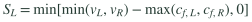
vL and vR denote normal velocities (uL and uR inside hlld_x), rather than the full vectors.
LaTeX source
\[ S_L=\min[\min(v_L,v_R)-\max(c_{f,L},c_{f,R}),0] \]
\[ S_R=\max[\max(v_L,v_R)+\max(c_{f,L},c_{f,R}),0] \]cfL and cfR set the outer bounds. This HLLD implementation uses a somewhat broader estimate than hll_x: min(uL,uR)−max(cfL,cfR) and max(uL,uR)+max(cfL,cfR), clamped around zero.
The contact wave
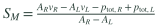
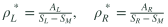
den = AR−AL; SM = contact speed. The source additionally floors each star density at 10⁻¹².
LaTeX source
\[ A_L=\rho_L(S_L-v_L),\quad A_R=\rho_R(S_R-v_R) \]
\[ S_M=\frac{A_Rv_R-A_Lv_L-p_{{\rm tot},R}+p_{{\rm tot},L}}{A_R-A_L} \]
\[ \rho_L^*=\frac{A_L}{S_L-S_M},\quad\rho_R^*=\frac{A_R}{S_R-S_M} \]SM estimates the contact speed and pts the shared star-region total pressure. dLs and dRs are the densities behind the outer fast waves, obtained from the jump conditions.
Two internal Alfvén waves
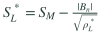
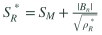
SLs and SRs are the rotational Alfvén speeds. The last line is the intended five-wave ordering for physical intermediate states.
LaTeX source
\[ S_L^*=S_M-\frac{|B_n|}{\sqrt{\rho_L^*}} \]
\[ S_R^*=S_M+\frac{|B_n|}{\sqrt{\rho_R^*}} \]
\[ S_L\leq S_L^*\leq S_M\leq S_R^*\leq S_R \]SLs and SRs add the rotational waves on either side of the contact. HLLD retains five waves in the physical MHD fan; it does not explicitly restore both slow magnetosonic waves.
The original dispatcher rotates any face into an x-normal frame, applies floors and GLM cleaning, selects LLF or HLLD, then rotates the flux back. The production HLL path has its own dispatcher with the same cleaning pattern.
@fastmath @inline function riemann(Lq::NTuple{9}, Rq::NTuple{9}, dir::Int, gamma::Float32, ch::Float32, smallr::Float32, pfl::Float32, llf_dmin::Float32, llf_pmin::Float32, use_hlld::Bool) L0 = rot_to(Lq, dir); R0 = rot_to(Rq, dir) # Floor the reconstructed interface states (PLM can overshoot to negative rho/p in voids). L = (max(L0[1],smallr), L0[2],L0[3],L0[4], max(L0[5],pfl), L0[6],L0[7],L0[8],L0[9]) R = (max(R0[1],smallr), R0[2],R0[3],R0[4], max(R0[5],pfl), R0[6],R0[7],R0[8],R0[9]) bns, psis = glm_pair(L[6], R[6], L[9], R[9], ch) fbn = psis fpsi = ch*ch*bns Lc = (L[1],L[2],L[3],L[4],L[5],bns,L[7],L[8],L[9]) Rc = (R[1],R[2],R[3],R[4],R[5],bns,R[7],R[8],R[9]) uself = (llf_dmin > 0.0f0 && min(L[1],R[1]) < llf_dmin) || (llf_pmin > 0.0f0 && min(L[5],R[5]) < llf_pmin) || !use_hlld f = uself ? llf_x(Lc, Rc, gamma, ch, fbn, fpsi) : hlld_x(Lc, Rc, gamma, ch, bns, fbn, fpsi) return rot_flux_from(f, dir)end Rotate components, not the mesh
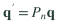
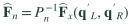
Pn is the component permutation implemented by rot_to. rot_flux_from undoes it; the grid itself does not rotate.
LaTeX source
\[ \mathbf{q}'=P_n\mathbf{q} \]
\[ \widehat{\mathbf{F}}_n=P_n^{-1}\widehat{\mathbf{F}}_x(\mathbf{q}'_L,\mathbf{q}'_R) \]rot_to permutes velocity and magnetic components so the same x-flux routine can serve y and z faces. These are coordinate permutations; the Eulerian grid stays fixed.
Make the two interface states physical
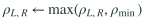
L and R receive floors; Lc and Rc then receive the common normal magnetic field returned by glm_pair.
LaTeX source
\[ \rho_{L,R}\leftarrow\max(\rho_{L,R},\rho_{\min}) \]
\[ p_{L,R}\leftarrow\max(p_{L,R},p_{\min}) \]
\[ B_{n,L}^{\rm clean}=B_{n,R}^{\rm clean}=B_n^* \]The reconstructed density and pressure are floored before solving. Cleaning supplies Bn*, ψ*, and their two fluxes. Lc and Rc then share the same normal magnetic field.
Select the physical solver
Each threshold rule is enabled only if its configured threshold is positive. use_hlld=false also forces LLF; otherwise the dispatcher selects HLLD.
LaTeX source
\[ \min(\rho_L,\rho_R)<\rho_{\rm switch}\ \Longrightarrow\ {\rm LLF} \]
\[ \min(p_L,p_R)<p_{\rm switch}\ \Longrightarrow\ {\rm LLF} \]use_hlld=false forces LLF; otherwise positive density/pressure thresholds can request LLF in configured low-state regions. This is a preselected threshold fallback, not a general retry after every invalid HLLD result.
After every face has its flux, the original tiled kernel updates all nine cell quantities using incoming minus outgoing fluxes.
Fxl = shget(LX, lin_fx(a, b, c)); Fxh = shget(LX, lin_fx(a+1, b, c)) Fyl = shget(LY, lin_fy(a, b, c)); Fyh = shget(LY, lin_fy(a, b+1, c)) Fzl = shget(LZ, lin_fz(a, b, c )); Fzh = shget(LZ, lin_fz(a, b, c+1)) u0 = loadc(uold, gi, gj, gk) r1 = ntuple(v -> u0[v] + dtdx*((Fxl[v]-Fxh[v]) + (Fyl[v]-Fyh[v]) + (Fzl[v]-Fzh[v])), 9) if r1[1] < smallr emag = 0.5f0*(r1[6]*r1[6] + r1[7]*r1[7] + r1[8]*r1[8]) r1 = (smallr, 0.0f0, 0.0f0, 0.0f0, pfl/(gamma-1.0f0) + emag, r1[6], r1[7], r1[8], r1[9]) end r = (r1[1],r1[2],r1[3],r1[4],r1[5],r1[6],r1[7],r1[8], r1[9]*glm_fac) for v in 1:9 unew[gi,gj,gk,v] = r[v] endConservation in one line
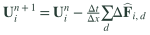
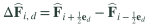
u0 = old cell state; r1 = flux-updated state. The minus sign here equals the code's plus sign multiplying incoming minus outgoing flux.
LaTeX source
\[ \mathbf{U}_i^{n+1}=\mathbf{U}_i^n-\frac{\Delta t}{\Delta x}\sum_d\Delta\widehat{\mathbf{F}}_{i,d} \]
\[ \Delta\widehat{\mathbf{F}}_{i,d}=\widehat{\mathbf{F}}_{i+\frac{1}{2}\mathbf{e}_d}-\widehat{\mathbf{F}}_{i-\frac{1}{2}\mathbf{e}_d} \]Fxl−Fxh is the net incoming x flux, and likewise for y and z. Multiplying by Δt/Δx gives the cell-average change. Neighboring cells use the shared face flux with opposite signs, so internal contributions cancel in a domain sum up to numerical rounding.
A floor can change conserved totals
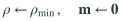
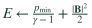
Applied only when the flux-updated density is below smallr. B and ψ are retained during this cell reset.
LaTeX source
\[ \rho\leftarrow\rho_{\min},\quad\mathbf{m}\leftarrow\mathbf{0} \]
\[ E\leftarrow\frac{p_{\min}}{\gamma-1}+\frac{|\mathbf{B}|^2}{2} \]If the updated density is below smallr, this branch resets density, all three momenta, and energy. That operation is separate from conservative flux balance and can change global totals. Completion alone does not establish accuracy or conservation.
Damp ψ, then write the new state
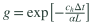
g = glm_fac, α = glm_cp_coef, L = boxlen. For α ≤ 0, the launcher sets g = 1. ψflux is the value after the conservative update.
LaTeX source
\[ \psi^{n+1}=g\,\psi^{\rm flux} \]
\[ g=\exp\!\left[-\frac{c_h\Delta t}{\alpha L}\right] \]Component 9 is multiplied by glm_fac, an exponential damping factor. Components 1–8 are unchanged by this damping line. The excerpt then skips the optional turbulence-forcing block and shows the write to unew.
The step launcher sets these parameters before starting the GPU kernel. The sweep driver chooses the timestep; it is separate from Tom’s kernel source.
N = p.N; dx = dxof(p); pfl = pfloor(p) @assert N % TB == 0 "N must be a multiple of $TB" ch = p.courant*dx/dt/Float32(NDIM)*p.glm_ch_scale glm_fac = p.glm_cp_coef > 0 ? exp(-(ch*ch/(p.glm_cp_coef*p.boxlen*ch))*dt) : 1.0f0Cleaning speed follows the timestep
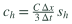
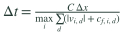
C = courant; sh = glm_ch_scale; NDIM = 3. The second equation is the benchmark driver's timestep rule, separate from the launcher.
LaTeX source
\[ c_h=\frac{C\,\Delta x}{3\,\Delta t}\,s_h \]
\[ \Delta t=\frac{C\,\Delta x}{\max_i\sum_d(|v_{i,d}|+c_{f,i,d})} \]ch = C Δx / (NDIM Δt) times glm_ch_scale, with NDIM=3. Cutting Δt while keeping the other parameters fixed raises ch. The constant-ch benchmark variant compensates through glm_ch_scale and also caps Δt for cleaning stability.
Exponential ψ damping
This is the source expression simplified for positive ch and α = glm_cp_coef > 0. α ≤ 0 disables damping.
LaTeX source
\[ g=\exp\!\left[-\frac{c_h\Delta t}{\alpha L}\right] \]
\[ \psi\leftarrow g\psi \]For positive glm_cp_coef, glm_fac = exp[−ch Δt/(glm_cp_coef × boxlen)]. Otherwise it is one, giving no damping. The code applies this after the conservative flux update.
The production path changes the storage type of shared memory. It still evolves fluid on a fixed grid, and it is not an entirely Float16 calculation.
@inline _sgT(S, lin) = ntuple(v -> Float32(@inbounds(S[9*lin + v])), 9) # ST -> f32 on read@inline function _spT(S, lin, q) # f32 -> ST on write @inbounds for v in 1:9; S[9*lin + v] = q[v]; endend TT = TB + 4; ST = HALF ? Float16 : Float32 SP = CuStaticSharedArray(ST, 9*TT*TT*TT) LX = CuStaticSharedArray(ST, 9*(TB+1)*TB*TB); RX = CuStaticSharedArray(ST, 9*(TB+1)*TB*TB) LY = CuStaticSharedArray(ST, 9*TB*(TB+1)*TB); RY = CuStaticSharedArray(ST, 9*TB*(TB+1)*TB) LZ = CuStaticSharedArray(ST, 9*TB*TB*(TB+1)); RZ = CuStaticSharedArray(ST, 9*TB*TB*(TB+1))Read shared values as Float32
Storage operations when HALF=true. Reading into Float32 preserves the already-rounded value; it cannot recover discarded precision.
LaTeX source
\[ q_{\rm stored}={\rm round}_{16}(q_{32}) \]
\[ q_{\rm read}={\rm Float32}(q_{\rm stored}) \]_sgT explicitly converts the nine stored values to Float32. _spT writes into the array’s element type, which rounds to Float16 when HALF=true. The conserved global state is Float32 in these benchmark runs.
Shared primitives, edges, and fluxes
TT is the tile width including halos; TB is its owned width. These count scalar elements, not bytes. Each listed face array has Nface elements.
LaTeX source
\[ T_T=T_B+4 \]
\[ N_{\rm primitive}=9T_T^3 \]
\[ N_{\rm face}=9(T_B+1)T_B^2 \]SP holds primitive states; LX/RX and their y/z counterparts hold face states. The left arrays are later reused for numerical fluxes. All use ST, so the production Float16 path rounds primitives, interface states, and fluxes in shared memory.
This variant estimates parabolic edges instead of linear edges. In this benchmark it is paired with Float16 shared storage and HLL; it is still time-predicted with Hancock.
@fastmath @inline function ppm_mono(ql, q0, qr) # CW84 monotonize -> (lo, hi) dq=qr-ql; diff=(q0-0.5f0*(ql+qr))*dq ifelse((qr-q0)*(q0-ql)<=0f0, (q0,q0), ifelse(diff>dq*dq/6f0, (3f0*q0-2f0*qr, qr), ifelse(diff<(-dq*dq/6f0), (ql, 3f0*q0-2f0*ql), (ql,qr))))end@fastmath @inline ppm_edges(qm,q0,qp) = (slope=0.25f0*(qp-qm); curve=(qm-2f0*q0+qp)/12f0; ppm_mono(q0-slope+curve, q0, q0+slope+curve))@fastmath @inline function ppm9(l,m,r); e=ntuple(v->ppm_edges(l[v],m[v],r[v]),9); (ntuple(v->e[v][1],9), ntuple(v->e[v][2],9)); end@fastmath @inline mhd_face9(mh,ed,m0) = ntuple(v->mh[v]+ed[v]-m0[v], 9) # PPM spatial edge + Hancock time predictionLimit the parabola
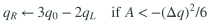
A corresponds to diff and Δq to dq. If (qR−q0)(q0−qL) ≤ 0, the earlier extremum rule instead sets both edges to q0.
LaTeX source
\[ \Delta q=q_R-q_L \]
\[ A=\left(q_0-\frac{q_L+q_R}{2}\right)\Delta q \]
\[ q_L\leftarrow3q_0-2q_R\quad\mathrm{if}\ A>(\Delta q)^2/6 \]
\[ q_R\leftarrow3q_0-2q_L\quad\mathrm{if}\ A<-(\Delta q)^2/6 \]ppm_mono flattens an extremum or adjusts an edge when the parabola would violate its monotonicity constraints. ql and qr are candidate left and right edge values around cell average q0.
Add curvature, then predict in time
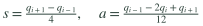
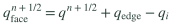
s = slope, a = curve; ppm_mono limits the two candidate edges. In mhd_face9, mh = predicted state, ed = limited spatial edge, m0 = original center.
LaTeX source
\[ s=\frac{q_{i+1}-q_{i-1}}{4},\quad a=\frac{q_{i-1}-2q_i+q_{i+1}}{12} \]
\[ q_L=q_i-s+a,\quad q_R=q_i+s+a \]
\[ q_{\rm face}^{n+1/2}=q^{n+1/2}+q_{\rm edge}-q_i \]ppm_edges uses the two neighbors and center to build a slope and curvature. mhd_face9 combines the spatial edge displacement ed−m0 with the half-time predicted state mh. This compact PPM is distinct from a full PPM4 scheme.
Where the timestep comes from
The benchmark driver takes the maximum over cells of Σd=x,y,z(|vd| + cf,d), then uses Δt = C Δx / that maximum. The main sweep used C = 0.25 and a unit box. Its constant-ch variant holds the initial cleaning speed fixed and adds a cleaning timestep cap.
This is driver behavior in sherlock_sweep/src/run_suite.jl (signals scan and timestep), separate from the unmodified solver excerpts above.